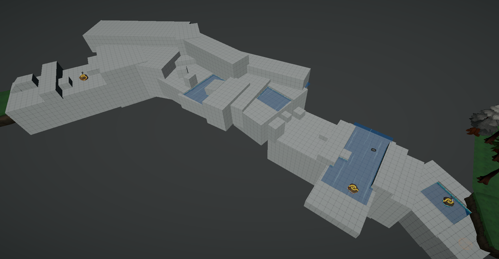

Samuel Cutts
PARA FAUNA INTERNSHIP
Overview
I completed an 18 week internship at Para Fauna studios, a small indie studio based in Ghent, Belgium. During my time there, I worked on a 3 small mobile/web games for Poki, one of we shipped on steam, as well their flagship project: Adapta Solva. I grew my skills in Design, planning and working under tight time constraints. I had the pleasure of doing this with an awesome team.
Key Takeaways
As an indie developer, I handled every technical task associated with any given feature, given we were with only 2 artists and 2 programmers, I often had to stretch beyond pure design work and take on larger sections of the pipeline. I gained experience in:
- Level Design
- Technical Art
- Playtesting and Iteration
- Writing scalable code
- Working for fast turnarounds
- Seeing a feature through from concept to final implementation
Responsibilities
Given the small team size of 4, I had to define my responsibilities more often than working within a defined project structure.
- Task Creation and estimation
- Starting and finishing a feature without constant guidance
- Designing and implementing new features
- Documenting my process to fit the needs of my team
Adapta Solva
I had the opportunity to work on the flagship project at Para Fauna. My primary responsibilities were to solve two majour challenges players were currently experiencing. The first was a sense of continuity for playsessions. In other words, giving players a sense that the levels they are playing are part of a larger, connected world. The second challenge was communicating to the player their impact on the game world by the action of restoring a corrupted forest through their afforded actions.
Level Design
My solution to giving players a stronger sense of continuity was to adapt and flesh out a previous idea for a hub world with interconnected tracks leading to and away from the hub. Additionally, I furthered the player's connection to the puzzles by adding traversal sections between each of the main puzzles, to break up the pacing.
Hub World
I was inspired by the hub worlds of traditional puzzle platformers and aimed to create a hubworld that focused on tutorialisation, story and exploration with secrets. To this end I took inspiration from games such as Spyro and Super Mario Sunshine. My first blockout of the hub involved forcing the player to perform a simple, low stakes puzzle to unlock each door.

We found after playtesting that the core idea of the hub worked, but the forced puzzles were causing players to view the hub as one large puzzle. So I retrofitted each of the puzzles into optional secret objectives to unlock collectables. As well as improved telegraphing for the player. This is what the final blockout looked like:

Platforming sections
In addtion to the Hub world, I added traversal sections with light platforming as a way to flesh out the tracks and break up the pacing. Lastly, the platforming sections act as an important form of tutorialisation.
Restoration Design
To achieve a sense of restoring the dead forest that the player inhabits and have that feel as satisfying as possible, I pitched and implemented a system of feedback that would be delivered to the player.